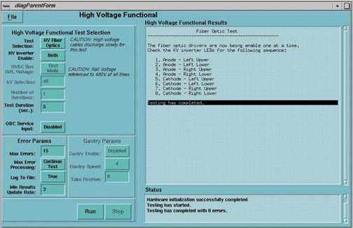

Proprietary to General Electric
Direction 5114043-800, Rev# 9
LightSpeed 3.X Service Methods (Advanced)
Proprietary to General Electric |
[SERVICE DESKTOP] -> [DIAGNOSTICS] -> [X-RAY GENERATION] -> [KV LOOP] -> [HV FIBER OPTICS]
Illustration 1: kV Fiber-Optic Screen

This diagnostic sequentially enables the fiber optic drivers to the KV inverters.
KV values drop as the mA increases.
Suspect bad fiber-optic connection.
Verification that all fiber optic connections are not miss wired.
Verify LEDs located on the KV inverters are enabled in the correct sequence.